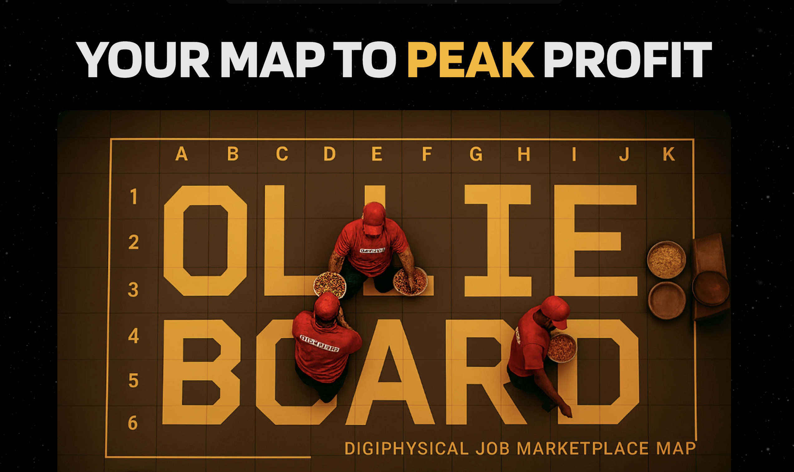
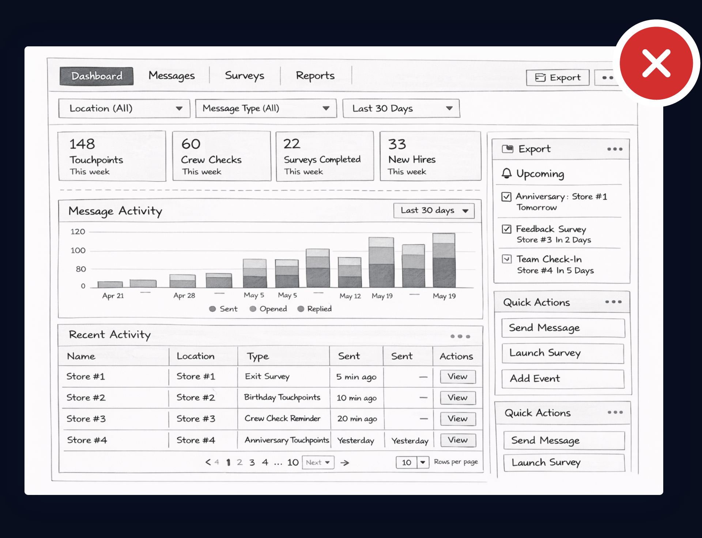
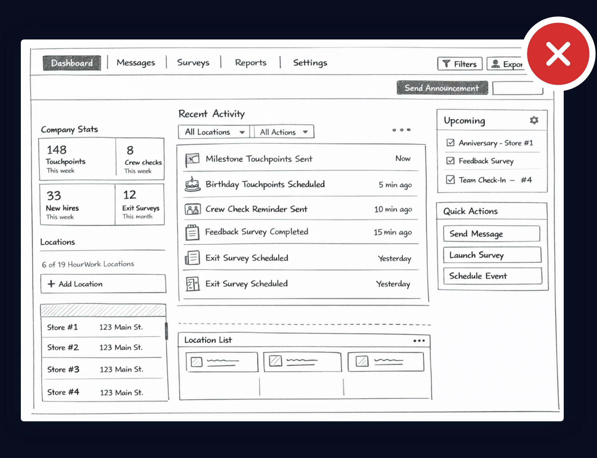

OllieBoard: Product Discovery
2025 · Product Discovery · Strategy · UX · Development
OllieBoard is a “GPS for store operations” built for quick-service restaurants like Domino’s. It transforms operational tasks into a coordinated, real-time workflow system. Employees receive guidance throughout their shifts, while sensors provide automated verification. The platform is designed to standardize execution and increase operational clarity.
Note: This work is presented as a discovery narrative rather than a traditional case study.

Context
ContextThe Beginning
After HourWork was acquired in 2024, the CEO approached me with a question:
What should we build next?
He had seen how I worked during early product phases — rapid exploration, user conversations, and building to validate ideas. We decided to start something new from the ground up.
That became OllieBoard.
Problem
Quick-service restaurants operate on hundreds of small, time-sensitive tasks: restocking, food prep, sanitation cycles, quality checks. Most of these tasks rely on memory, habit, or reactive management.
What if every task in the store could be:
- Scheduled optimally
- Assigned dynamically
- Verified automatically
We began exploring whether a store could operate more like a coordinated system — rather than a collection of human reminders.
The Hypothesis
OllieBoard became our attempt to build a “GPS for store operations.”
Every recurring task — from making pizzas to sanitizing counters — feeds into a centralized optimization system. Mounted screens at workstations display prioritized tasks in real time, guiding employees through the most efficient workflow.
Sensors placed throughout the store track movement, allowing the system to detect when tasks are completed.
This creates a feedback loop between instruction and verification.
What is OllieBoard?
Discovery

Learning from Top Operators
Early in discovery, we embedded ourselves in stores — not just to observe, but to learn directly from top-performing operators.
This session was led by a Top 10 Domino’s franchise owner, who walked us through his operational philosophy and performance standards.
Understanding how elite stores operate shaped how we thought about task optimization and system design from day one.

Defining the Gold Standard
We collaborated with top-performing Domino’s owners — including a Gold Franny winner and Top 10 operators — to map the ideal order of tasks within the store.
These workshops shaped our task sequencing logic and informed how the system would prioritize work.
Process
Understand
- Stakeholder alignment
- Scope definition
- Constraints identified
Research
- User context
- Usage environment
- Existing solutions
- Patterns worth borrowing
Explore
- Low-fidelity wireframes
- Layout directions
- Rejected ideas
- Tradeoffs
Prototype
- Higher-fidelity prototypes
- Interaction models
- Structural decisions
Validate
- Feedback
- Usability insights
- Early signals of success
- What needs changing?
- What didn’t change?
Understand
Initial problem discovery
Before designing anything, I needed to understand how the system was actually being used, and where it was falling short for managers.
I started by talking with the team and reviewing the questions coming in from customers. A clear pattern showed up quickly: Managers weren’t confused about how to send messages, they were confused about what the platform was doing on their behalf.

The challenge was made clearer
This wasn’t just a missing dashboard — it was a visibility gap that limited trust and made the product hard to use. My focus at this stage was defining what managers needed to understand at a glance in order to feel confident using the platform on their own, and what information mattered most to support that change.
Research
What we found about our users
Once the problem space was clearer, the next step was pressure-testing our assumptions. Who was this dashboard actually for? How would it be used in real life?
Most managers were accessing HourWork on a shared computer in the back of the store, usually between tasks or during short breaks. They weren’t tech-savvy, and they weren’t interested in learning a complex system. That context made the priority obvious: the dashboard needed to be fast to read, predictable, and hard to mess up. Visual flair mattered far less than clarity.
Alongside this, I looked at how other products approached similar problems. Rather than reinventing the wheel, I reviewed dashboards and management tools that successfully surfaced activity, status, and history at a glance. This helped identify familiar patterns managers would already recognize, as well as common pitfalls to avoid, such as overly dense layouts or excessive configuration.
That work reinforced a key constraint: this dashboard wasn’t a place to show off. It needed to stay out of the way and let managers get what they needed quickly. Those insights directly shaped both the structure and tone of the designs that followed.
Explore
Wireframing
Wireframes are where ideas get pressure-tested. I use them to explore multiple directions quickly, challenge assumptions, and understand the tradeoffs between clarity, flexibility, and complexity before committing to a solution.

The Complex / Power-User Dashboard
Why we thought it might work
This concept leaned into completeness: advanced filters, detailed charts, and full activity logs. It promised total visibility across stores and seemed scalable long term.
Why it failed
This approach assumed managers had the time and technical comfort to explore a complex dashboard. In reality, they didn’t. It required setup before it became useful and added friction instead of clarity. Research showed that managers needed quick reassurance, not a reporting tool.

The Notification-Heavy / Activity Feed
Why we thought it might work
This direction focused on a real-time activity feed that surfaced every message, survey, and response in chronological order. It created a sense of transparency, giving managers clear visibility into what the system was doing.
Why it failed
While transparent, this approach leaned too heavily on recency. The activity feed quickly became noisy, making it hard to spot meaningful patterns or upcoming milestones. Instead of reducing uncertainty, it added distraction. Managers needed clarity, not a live stream of events.
The final structure
This layout separated short-term and longer-term information, making it easier to scan and reducing mental overhead. Now that the structure is in place, the focus shifts to refining how the dashboard should look and behave.